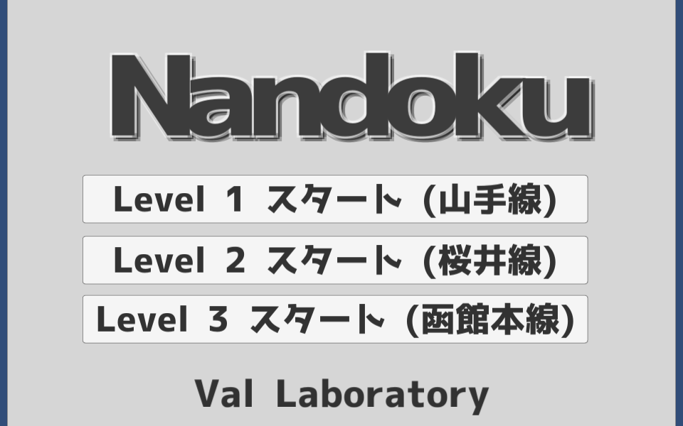
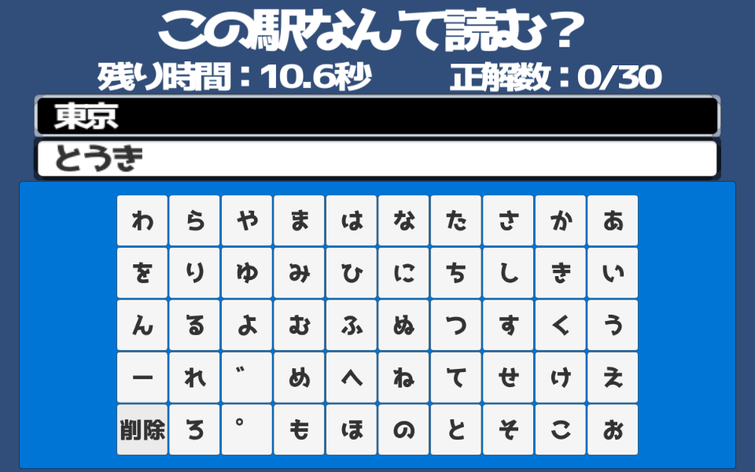
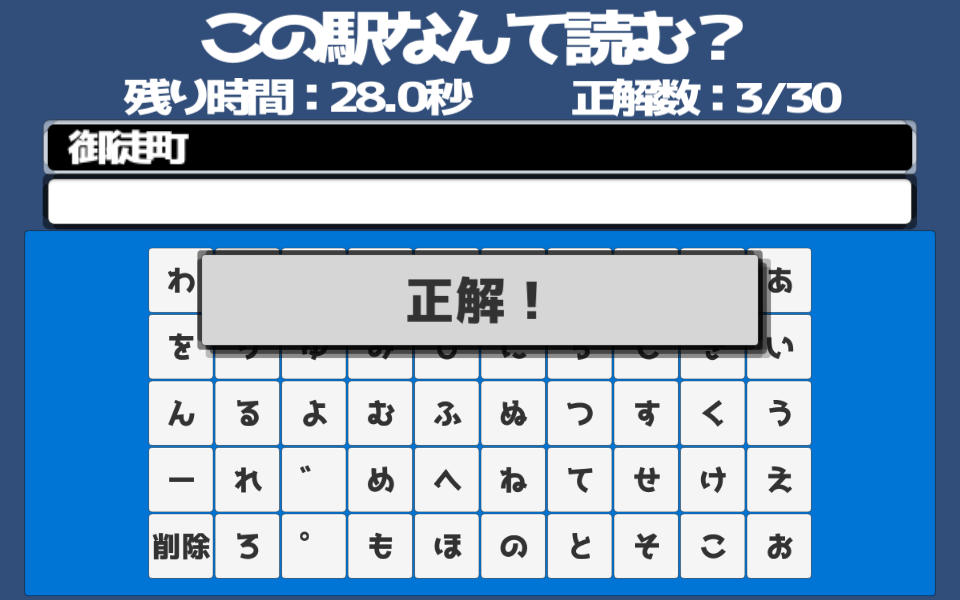

更新履歴
-
サンプルゲームの「Nandoku」を追加しました。
レベルを指定してください。
駅名の読みを正しく入力すると次へ進みます。
「ゃ」など、小さい文字は「や」で入力してください。
「ば」などの濁音は「は」を選択した後「゛」を押してください。
全ての駅を入力し終わるか、時間が切れると結果画面が表示されます。
WebGLを利用して開く（Chrome/Safari/FireFox向け）
WebPlayerで開く（Internet Explorer向け）
※スマートフォン/タブレット非推奨
  
はじめに
-
お申込み
はじめてご利用いただく場合は駅すぱあとワールドでのお申込み(無償/有償)とキーの発行が必要になります。
なお、無償版のお申し込みは下記のページから行ってください。
また、後日、認証キーをメールにてお送りいたします。
ご利用方法
-
ソースコードを取得する
「View on GitHub」でソースコードのページへ遷移し、ダウンロードを行ってください。
-
プロジェクトの使い方
「View on GitHub」で遷移したページのWikiを参照してください。
サンプルに関する説明
-
サンプルの仕組み
- 「検索する名称を入力してください」の部分に会社名(全角)、路線名(全角)、駅名(漢字、ひらがな、ローマ字・半角可)を入力します(前方一致)
- 取得する情報のボタンを押すと駅すぱあとWebサービスと通信を行い、該当する名称を検索します
- 取得した名称を画面上に表示します
-
サンプルコードをご利用いただく場合
取得した名称は変数(配列)に格納済みのため、様々な用途に利用することが出来ます。
サンプル
WebGLを利用して開く（WebPlayerが利用できないブラウザ向け・スマートフォン/タブレット非推奨）
ご注意
- 既存のプロジェクトに追加することも可能ですが、既存のファイルを上書きしてしまうなど、十分ご注意ください。
最後に
-
今後もUnity上で駅すぱあとWebサービスを活用するためのサンプルコードを追加していく予定です。